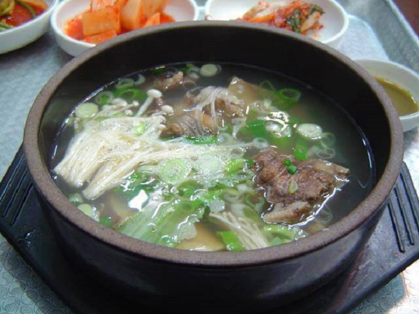

Du lịch Hàn Quốc
Welcome to Korea
Welcome to Korea
Nền nông nghiệp phát triển do vậy việc sản xuất gạo và ngũ cốc được đa dạng hóa. Ba phía đều được bao bọc bởi biển nên thủy, hải sản tại Hàn Quốc rất dồi dào. Chính vì vậy, người dân đã đa dạng về công thức nấu ăn. Họ sử dụng sản phẩm từ biển, tiêu biểu là rong biển, hàu, cá,.. và các loại thực phẩm lên men. Xì dầu, kim chi, cá muối cũng phong phú. Do đó, công nghệ bảo quản thực phẩm phát triển từ rất sớm. Người Hàn Quốc đã tận dụng rất tốt đặc điểm của các mùa và vùng miền. Họ coi trọng hương vị hài hòa. Công thức món ăn cũng được chế biến hợp lý.
Ẩm thực Hàn Quốc chịu ảnh hưởng của các yếu tố sinh thái tự nhiên làm nền.Tuy nhiên, sự kế thừa truyền thống của mỗi nhà cũng đóng một phần quan trọng. Tính nguyên bản của món ăn đã được bảo tồn với sự bền bỉ và lòng tận tâm. Vì vậy, ngay cả khi thực phẩm nước ngoài du nhập do chiến tranh, ngoại xâm, hoặc xâm lược văn hóa thì nó vẫn được hài hòa, phù hợp với điều kiện và nét đặc trưng vốn có, để văn hóa ẩm thực Hàn Quốc vẫn có thể tiếp tục.
Bánh gạo, cháo, mì, bánh bao và các sản phẩm chế biến khác luôn xuất hiện trong các bữa chính hàng ngày. Đặc biệt, thực phẩm ngũ cốc là gạo và đậu, có tác dụng cung cấp chất dinh dưỡng, giảm cholesterol, ngăn ngừa bệnh tật.
Các công thức nấu ăn như nướng, hấp, xào, jeon (đồ chiên) và sashimi đã được phát triển. Phương pháp nướng có sự kết hợp hương vị rất tuyệt vời. Nếu đến Hàn Quốc, bạn hãy thử thưởng thức những món ăn với nhiều cách chế biến. Chắc chắn sẽ cảm nhận được hương vị thơm ngon, hấp dẫn mà không quên được.
Cá được sản xuất dồi dào theo mùa. Người Hàn Quốc lưu truyền theo nhiều cách chế biến món ăn nhẹ và mặn như sashimi sống, cá nấu chín, hấp, luộc, nướng và hầm.
Món ăn tiêu biểu trong thực phẩm lên men chính là kim chi. Vì làm từ các loại rau, củ nên nó có tác dụng tuyệt vời trong việc điều chỉnh các chức năng trong cơ thể, cung cấp vitamin và khoáng chất cũng như chất xơ.
Những năm gần dây, Eumcheongry được chú ý. Nhu cầu sử dụng thức uống này ngày càng tăng. Đây là sản phẩm tốt cho sức khỏe cũng như là một món ăn được yêu thích, do nhiều thành phần và công thức nấu ăn khác nhau.
Vì công thức phức tạp nên hầu hết chúng đều được băm nhỏ hoặc cắt nhỏ từ trước. Người Hàn sử dụng gia vị rất tinh tế. Tuy nhiên, mỗi gia vị phù hợp với từng loại thực phẩm Hàn Quốc khác nhau. Khi kết hợp lại sẽ tạo nên những món ăn vô cùng hoàn hảo.
Các loại rau sống và sukchae rất dễ được nêm nếm và tẩm ướp gia vị, nhưng không loại nào có thể làm mất đi màu sắc, hình dạng hoặc mùi vị ban đầu của rau. Bất cứ loại thực vật nào không có độc trên đồng ruộng, trên núi đều trở thành nguyên liệu cho các món ăn xứ Hàn. Lý do cho sự phát triển của ẩm thực namul là vì người Hàn Quốc thích sống hòa hợp với thiên nhiên, núi rừng. Điều này cũng có ảnh hưởng tới ẩm thực Hàn Quốc. Thông thường, bàn ăn của người Hàn được chia thành cơm, canh, cơm khô và đồ xanh. Geongeoni có nghĩa là thực phẩm lên men như doenjang, nước tương và kim chi, và xanh có nghĩa là rau – rau rừng. Có thể thấy cả 4 yếu tố của bàn ăn Hàn Quốc đều có nguồn gốc thực vật.
Món súp hoặc món hầm mà người Hàn ăn luôn phải nóng, để thưởng thức một cách từ từ và tránh phát ra âm thanh sau khi thổi. Súp và món hầm đều giống nhau. Hầu hết các món kim chi và nước xốt đều có súp. Không phải không có các món ăn kèm khô nhưng hơn 80-90% trên bàn ăn là súp.
GỢI Ý TOUR DU LỊCH HÀN QUỐC |
|---|
>> Du Lịch Hàn Quốc: Hà Nội – Seoul – Lotte World – Trượt Tuyết Jangjipine 5 Ngày Trượt Tuyết Bay Jeju Air chỉ với 12.500.000 đồng
|
Đồ sắt dễ nóng lên và dễ nguội đi vì nhiệt dẫn truyền nhanh. Đồ sứ hoặc sành sứ có tính dẫn nhiệt thấp nên nóng lên và nguội dần. Đây là lý do tại sao Seolleongtang (설렁탕- súp xương bò Hàn Quốc) hoặc món hầm được cho vào nồi và đun sôi.
Sự hài hòa của ngũ sắc trong món ăn Hàn Quốc: vàng, xanh, trắng, đỏ, đen và sự hài hòa của ngũ vị: mặn, cay, chua, ngọt, đắng làm ngon mắt, bổ miệng, bổ tâm tráng dương. Các công thức nấu ăn khác nhau được sử dụng. Việc nấu, nướng, rang, hấp để nhận ra hương vị, giá trị dinh dưỡng của các thành phần và độ tương thích của thực phẩm. Trong chế biến, người Hàn sử dụng nhiều công thức khác nhau để kích thích năm giác quan. Nét độc đáo của ẩm thực Hàn Quốc thật thú vị phải không nào?
Thức ăn Hàn Quốc bao gồm cơm và các món ăn kèm rất giàu ba chất dinh dưỡng. Đây là thực phẩm lành mạnh, tiêu hao đồng đều các chất dinh dưỡng. Nó được chế biến từ thành phần thức ăn phong phú theo mùa xuân, hạ, thu, đông. Tác dụng tuyệt vời là phòng chống béo phì và các bệnh ở người lớn tuổi. Đó là một chế độ ăn uống lành mạnh với ít calo và cân bằng dinh dưỡng tuyệt vời.
Các loại thực phẩm cơ bản thường ăn là xì dầu, tương đậu nành, ớt đỏ, kim chi, dưa chua và nhiều loại cá muối. Thực phẩm lên men là thực phẩm tốt cho sức khỏe. Hương vị axit amin được hình thành bởi quá trình lên men này là hương vị rất Hàn Quốc của Hàn Quốc. Nếu có cơ hội đi du lịch Hàn Quốc, bạn không thể bỏ lỡ nó. “Ăn gì?” sẽ không còn là vấn đề khiến bạn băn khoăn. Món ăn Hàn Quốc luôn phong phú và đa dạng. Đó là hương vị của thiên nhiên và văn hóa truyền thống. Trên đây cũng chính là kinh nghiệm du lịch Hàn Quốc. Bạn đã sẵn sàng cho chuyến đi của mình chưa? Hãy đến để cảm nhận những tinh hoa văn hóa ẩm thực xứ Hàn, thưởng thức các món ăn ngon nhất nơi đây. Những thông tin hữu ích này sẽ giúp bạn tự tin hơn trên chuyến hành trình của mình. Đừng quên cập nhật tin tức du lịch Hàn Quốc mới nhất của chúng tôi.
Top 20 điểm tham quan nhất định phải ghé thăm trong hành trình chinh phục Seoul

Điện thoại: 0903357616
Email: thaontps24690@fpt.edu.vn